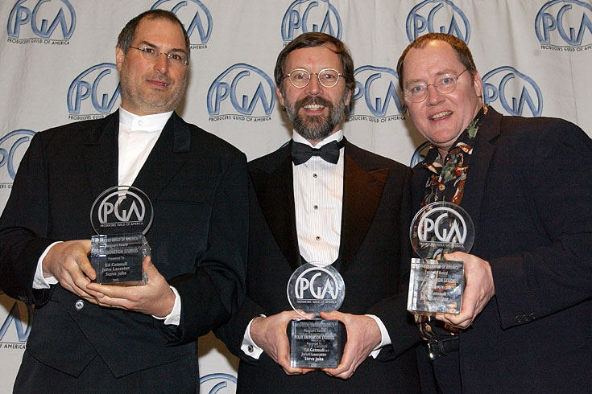
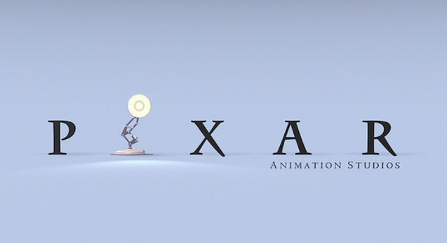

Chương 18

hi Job đã mất đi vị thế của mình tại Apple vào mùa hè năm 1985, ông và Alan Kay đã gặp nhau, Alan Kay là người từng làm việc tại Xerox PARC và sau đó trở thành một thành viên của Apple. Kay biết Job có hứng thú với sự tương giao giữa sáng tạo và công nghệ, vì thế ông đã gợi ý việc họ sẽ đến gặp một người bạn của ông là Ed Catmull, người quản lý bộ phận máy tính tại xưởng phim George Lucas. Họ thuê một chiếc Limo và lái xe đến chi nhánh Skywalker của Lucas, nơi Catmull làm việc cùng với bộ phận máy tính của mình. “Tôi đã thực sự bị ấn tượng, và tôi đã quay trở lại để cố thuyết phục Scully mua thiết bị đó cho Apple,” Jobs nhớ lại. “Tuy nhiên, những nhà điều hành Apple lại không hề hứng thú gì với việc này, họ còn đang bận tìm cách đuổi cổ tôi”.

Jobs cùng hai sáng lập viên Pixar, Ed Catmull (hình đứng giữa) và John Lasseter
Phòng máy tính của xưởng phim Lucas đã tạo ra phần cứng và phần mềm để hiển thị hình ảnh kỹ thuật số, và nó cũng tạo ra một nhóm chuyên phụ trách về đồ họa để tạo ra các đoạn phim ngắn và được dẫn dắt bởi một chuyên gia tài năng đam mê với hoạt hình - John Lassater. Lucas, người đã hoàn thành tác phẩm đầu tay của mình là ba phần bộ phim star Wars (chiến tranh giữa các vì sao), đã bị dính vào một cuộc tranh chấp li dị, và vì thế ông ấy cần phải bán đi một phần của xưởng phim, ông ấy đã nhờ Catmull tìm một người có thể mua nó trong thời gian sớm nhất.
Vào mùa thu năm 1985, sau vài người mua tiềm năng tỏ ra ngần ngại, Catmull và đồng sự của mình là Alvy Ray Smith đã quyết định đi tìm những nhà đầu tư để họ có thể tự mua chính bộ phận của mình. Vì thế họ đã tìm đến Jobs, sắp xếp một buổi gặp mặt và lái xe về ngôi nhà Woodside của ông. Sau khi đàm phán, Jobs đề nghị ông sẽ mua toàn bộ xưởng phim Lucas.
Catmull và Smith đã phản đối, họ muốn một nhà đầu tư chứ không phải một người chủ mới.
Nhưng mọi chuyện đã nhanh chóng được giải quyết khi Jobs đưa ra ý kiến rằng ông có thể mua phần lớn và sẽ trở thành chủ tịch, nhưng cho phép Catmull và Smith điều hành nó.
“Tôi muốn mua nó bởi vì tôi thực sự có hứng thú với đồ họa máy tính,” Jobs nhớ lại. “Tôi nhận ra rằng họ là những người dẫn đầu trong lĩnh vực kết hợp giữa nghệ thuật và công nghệ, điều mà tôi luôn luôn quan tâm.” Ông đã đề nghị trả Lucas năm triệu đô la cộng thêm một khoản đầu tư 5 triệu đôla nữa để biến bộ phận đó trở thành một công ty độc lập. Số tiền này ít hơn so với những gì Lucas đã yêu cầu, tuy nhiên họ thấy rằng lúc này là thời điểm thích hợp. Họ quyết định đàm phán để đưa ra một thỏa thuận.
Giám đốc tài chính của xưởng phim Lucas thấy Jobs kiêu ngạo và khó tính, vì thế, khi cuộc họp chuẩn bị diễn ra, ông đã nói với Catmull “Chúng ta cần phải thể hiện rõ vị thế của mình”. Theo kế hoạch thì họ sẽ tập hợp mọi người lại trong một căn phòng cùng với Jobs, sau đó giám đốc tài chính sẽ vào muộn vài phút và giới thiệu mình chính là người điều hành buổi họp. “Nhưng một điều thú vị đã xảy ra”, Catmull nhớ lại. “Steve đã bắt đầu buổi họp mà không có giám đốc tài chính, và lúc ông này bước vào thì Steve đã tự mình điều khiển cuộc họp mất rồi.” Jobs chỉ gặp George Lucas một lần duy nhất, ông là người đã cảnh báo Jobs về việc những người ở trong bộ phận này quan tâm tới việc tạo ra được các bộ phim hoạt hình hơn là việc làm ra những chiếc máy tính. “Ông biết đấy, họ chính là những người thực sự tâm huyết với hoạt hình,” Lucas nói với Jobs như vậy. Lucas nhớ lại. “tôi đã nhắc nhở ông ấy rằng, về căn bản chính đó là kế hoạch của Ed và John. Tôi nghĩ rằng trong tim Jobs, ông mua công ty này bởi nó cũng chính là kế hoạch của ông.”
Thỏa thuận cuối cùng mà họ đã đạt được là vào tháng Giêng năm 1986. Bản thỏa thuận đó nói rằng với số tiền đầu tư 10 triệu đôla đó, Jobs sẽ sở hữu 70% công ty, và toàn bộ số cổ phiếu còn lại được phân phối cho Ed Catmull, Alvy Ray Smith và 38 nhân viên từ nhân viên chủ chốt cho tới lễ tân. Thiết bị phần cứng quan trọng nhất của bộ phận này được gọi là Pixar Image Computer (Máy tính hoạt ảnh Pixar), và công ty đã được đặt tên theo nó.
Trong một thời gian dài, Jobs để Catmull và Smith điều hành Pixar mà không can thiệp nhiều. Cứ hàng tháng hoặc lâu hơn, họ lại mở một cuộc họp hội đồng quản trị, thường là tại trụ sở chính NeXT, nơi mà Jobs tập trung quản lý tài chính và chiến lược. Dù vậy, bằng sự mạnh mẽ được thể hiện qua tính cách và khả năng kiểm soát của mình, Jobs đã nhanh chóng đóng một vai trò quan trọng hơn. ông đã đưa ra hàng loạt các ý tưởng, một số thì hợp lý nhưng một số khác thì lại khá kỳ quặc về việc phát triển phần cứng và phần mềm của Pixar. Qua các buổi ghé thăm thường xuyên của ông tại văn phòng Pixar, ông đã truyền được cảm hứng cho toàn bộ nhân viên. “Tôi lớn lên ở miền nam Baptist, và chúng tôi cũng đã có những buổi họp khơi dậy nhiệt huyết nhưng lại được thuyết trình bởi những kẻ thối nát”, Alvy Ray Smith kể lại. “Steve thì khác, lời nói của ông có một sức mạnh khiến mọi người bị thu hút. Chúng tôi đã nhận ra được điều đó qua các cuộc họp, vì thế chúng tôi đã tạo ra các dấu hiệu -gãi mũi hoặc kéo tai - với những ai bị hút vào khả năng bóp méo của Steve và anh ta cần phải được kẻo trở về với thực tế.” Jobs luôn đánh giá cao ưu điểm tích hợp những phần cứng và phần mềm hiệu quả mà Pixar đã làm và phần mềm dựng hình của nó. Nó cũng tạo ra những nội dung sáng tạo, chẳng hạn như những bộ phim hoạt hình và đồ họa. Đó chính là ba lợi ích được tạo ra từ việc kết hợp giữa sự sáng tạo nghệ thuật và công nghệ của Jobs. “Những nhà điều hành ở thung lũng Silicon không thực sự đánh giá cao kiểu sáng tạo của Hollywood, và những nhà quản lý Hollywood thì lại nghĩ rằng những cẤn bộ kỹ thuật chỉ là những người mà họ thuê và họ không cần thiết phải gặp mặt,” Jobs cho biết. “Pixar là một nơi mà cả hai văn hóa này được tôn trọng”.
Doanh thu ban đầu được cho là chủ yếu từ các phần cứng. Pixar Image Computer được bán với giá125,000 đô - la. Các khách hàng chính là những người chuyên thiết kế đồ họa và hiệu ứng động, nhưng thiết bị này cũng sớm tìm được thị trường đặc biệt trong ngành công nghiệp y khoa (CAT quét dữ liệu có thể đưa ra được hình ảnh đồ họa ba chiều) và các lĩnh vực tình báo (để truyền và dựng các thông tin từ các chuyến bay do thám hoặc các vệ tinh). Vì thương vụ với Cơ quan An ninh Quốc gia, Jobs đã phải hoàn tất các thủ tục an ninh cần thiết, một công việc khá vui vẻ đối với nhân viên FBI được giao nhiệm vụ khám xét ông. ở một thời điểm nào đó, một nhà quản lý của Pixar nhớ lại, Jobs đã bị thanh tra gọi về việc liên quan đến sử dụng ma túy và ông đã trả lời một cách thẳng thắn. “Lần cuối tôi sử dụng nó là...”, trong trường hợp đó, ông ấy đã có thể hoặc nên trả lời là ông ấy chưa bao giờ thử loại thuốc đó.
Jobs đã thúc đẩy Pixar xây dựng một phiên bản máy tính có chi phí thấp hơn vào khoảng 30,000 đô - la. ông nhấn mạnh rằng Hartmut Esslinger đã thiết kế nó, bất chấp sự phản đối của Catmull và Smith về chi phí ông đưa ra. Nó trông giống với phiên bản ban đầu của Pixar Image Computer là một khối lập phương với vòng tròn võng ở giữa, nhưng nó có thêm chữ ký của Esslinger ở rãnh.
Jobs muốn máy tính của Pixar hướng đến thị trường đại chúng, vì thế ông ấy đã mở các đại lý bán hàng ở các thành phố lớn, nơi mà ông sẽ phê duyệt các thiết kế, dựa trên lý thuyết những người sáng tạo sẽ sớm thích ứng được với tất cả các cách sử dụng máy tính. “Quan điểm của tôi là con người là loài động vật sáng tạo và họ sẽ tìm ra được những cách thông minh để sử dụng các công cụ mà các nhà phát minh không bao giờ tưởng tượng ra,” sau này ông cho biết. “Tôi nghĩ rằng điều này sẽ xảy ra đối với máy tính Pixar, như đã xảy ra với Mac.” Nhưng những chiếc máy đó đã không nhận được sự ủng hộ của người tiêu dùng. Nó có chi phí quá lớn và không có nhiều phần mềm chương trình.
Về phía phần mềm, Pixar đã tạo ra một trình duyệt dựng hình, được biết với cái tên Reyes (Renders everything you ever saw - mô phỏng tất cả những gì bạn đã từng thấy), để tạo ra đồ họa và hình ảnh 3D. Sau khi Jobs trở thành chủ tịch, công ty đã tạo ra được một ngôn ngữ lập trình vào giao diện mới, được đặt tên là RenderMan, nó được hy vọng sẽ trở thành chuẩn mực cho việc dựng hình đồ họa 3D, cũng giống như việc phần mềm in laze PostScript của Adobe.
Giống với những gì ông đã làm với phần cứng, Jobs quyết định rằng họ nên thử tìm một thị trường đại chúng cho phần mềm họ tạo ra thay vì chỉ tập trung vào các thị trường chuyên biệt, ông chưa bao giờ có một mục tiêu duy nhất cho công ty hay chỉ nhắm vào các thị trường cao cấp chuyên ngành. “Jobs muốn hướng RenderMan trở thành một phần mềm dành cho tất cả mọi người,” Pam Kerwin, giám đốc Marketing của Pixar nhớ lại. “Ông ấy luôn luôn đưa ra những ý tưởng về việc làm sao một người bình thường có thể sử dụng phần mềm đó để tạo ra những bức ảnh sinh động chân thực và hình ảnh đồ họa 3D tuyệt vời.” Nhóm dự án của Pixar cố gắng thuyết phục ông bằng cách nói rằng việc sử dụng RenderMan không hề dễ dàng như là sử dụng Excel hay Adobe Illustrator. Sau đó Jobs bước đến tấm bảng và chỉ cho họ thấy cách làm nó trở nên đơn giản và thân thiện với người sử dụng. “Chúng tôi gật đầu và cảm thấy phấn khích và thốt lên “Đúng thế, nó sẽ thực sự rất tuyệt!””. Kerwin nhớ lại. “Và ngay sau khi ông ấy đi, chúng tôi đã cân nhắc lại ý tưởng đó và không thể hiểu nổi ông ấy đã nghĩ cái gì”, ông ấy thực sự khiến người khác bị thu hút một cách kỳ lạ và bạn sẽ gần như phải đả thông lại tư tưởng ngay sau khi bạn nói chuyện với ông ấy.” Thực tế, người tiêu dùng bình dân lại không hề hứng thú với một phần mềm đắt tiền giúp họ tạo dựng được những hình ảnh chân thực. RenderMan đã không được đưa ra.
Tuy nhiên, lại có một công ty hứng thú với việc dựng các hình vẽ hoạt hình thành hình ảnh màu sắc cho bộ phim. Khi Roy Disney chủ trì việc đổi mới ban quản trị của công ty mà chú Walt của anh ta đã sáng lập ra, giám đốc điều hành mới - Micheál Eisner đã hỏi Disney rằng anh muốn vị trí nào. Disney nói rằng anh ta muốn phục hồi lại bộ phận thiết kế hoạt họa. Một trong những sáng kiến đầu tiên của ông này là tìm cách tin học hóa quá trình, và Pixar đã giành được hợp đồng.
Nó tạo ra một gói phần cứng và phần mềm tùy chỉnh được biết đến với cái tên CAPS, Computer Animation Production System (hệ thống sản xuất hoạt họa máy tính). Nó được sử dụng lần đầu vào năm 1988 trong cảnh cuối của bộ phim The Little Mermaid (Nàng tiên cá) khi mà vua Triton vẫy chào tạm biệt Ariel. Disney đã mua hàng tá máy tính hoạt họa Pixar vì CAPS là một phần không thể thiếu trong quá trình sản xuất.
Hoạt ảnh
Công việc của nhóm đồ họa động kỹ thuật số tại Pixar - một nhóm thường làm các bộ phim hoạt hình - lúc đầu có mục đích chủ yếu là sử dụng và quảng cáo luôn chính những phần cứng và phần mềm của công ty. Nó được điều hành bởi John Lasseter, một người có khuôn mặt trẻ con và có phong thái của một nhà nghệ thuật cầu toàn có thể sánh ngang với Jobs. Được sinh ra tại Hollywood, Lasseter lớn dần lên cùng với sở thích xem chương trình hoạt hình sáng thứ Bảy hàng tuần. Vào năm lớp 9, ông đã viết một bản báo cáo về lịch sử của xưởng phim Disney, và sau đó ông quyết định việc ông mong muốn có một cuộc sống như thế nào.

Khi ông tốt nghiệp cấp 3, Lasseter tham gia vào một dự án phim hoạt hình tại Học viện nghệ thuật California - thành lập bởi Walt Disney. Khi nghỉ hè và vào những lúc rảnh rỗi, ông đã nghiên cứu về những tài liệu lưu trữ của Disney và làm việc như một hướng dẫn viên của chuyến tham quan Jungle Cruise tại Disneyland. Những kinh nghiệm sau đó dạy ông giá trị của thời gian và nhịp độ kể một câu chuyện, một bước quan trọng nhưng khá là khó để có thể nắm vững cách tạo dựng từng khung hình và từng đoạn phim ngắn, ông đã giành giải Student Academy Award (Giải thưởng hàn lâm giành cho sinh viên) cho bộ phim ngắn ông đã làm khi là sinh viên năm nhất, Lady and the Lamp (Quý bà và cây đèn), bộ phim này có lẽ chính là cái duyên của ông đối với hãng phim Disney và nó cũng có thể là một điềm báo trước về tài năng của ông trong việc biến các vật vô tri vô giác như những chiếc đèn thành những nhân vật có tính cách của con người. Sau khi ông tốt nghiệp, ông nhận một công việc mà có lẽ số phận đã dành cho ông, đó chính là một nhà làm phim hoạt hình tại xưởng phim Disney.
“Một vài người trẻ tuổi chúng tôi muốn biến bộ phim star Wars thành một bộ phim hoạt hình nghệ thuật chất lượng, nhưng chúng tôi đã gặp phải trở ngại là bộ phim đã bị giữ lại để kiểm tra,” Lasseter nhớ lại. “Tôi đã bị vỡ mộng, và sau đó tôi bị cuốn vào cuộc chiến thù địch giữa hai ông chủ, và sau đó người đứng đầu nhóm làm phim đã sa thải tôi.” Vì thế vào năm 1984 Ed Catmull và Alvy Ray Smith đã có thể tuyển dụng ông để làm việc cho hãng phim Lucas, nơi mà chất lượng của bộ phim star Wars được xác định. Thế nhưng George Lucas lại đang lo lắng về chi phí của bộ phận máy tính thì liệu ông có chấp thuận việc thuê một nhà làm phim hoạt hình toàn thời gian, vì vậy Lasseter đã được gọi là là “nhân viên thiết kế giao diện”.
Khi Jobs đặt chân vào công ty này, ông và Lasseter bắt đầu chia sẻ cùng nhau về niềm đam mê với công việc thiết kế đồ họa. “Tôi là nghệ sĩ suy nhất tại Pixar, vì thế tôi có thể phát triển được những ý tưởng thiết kế của Jobs,” Lasseter nói. ông là một người thích giao du, tính cách vui tươi và ấm áp, một người đàn ông với chiếc áo Hawaii, luôn giữ văn phòng của mình đầy ắp những món đồ chơi cổ, và ông rất yêu thích bánh mì phô mai. Jobs thì lại là một người hay tức giận, ăn chay và mọi thứ xung quanh ông luôn phải được gọn gàng. Tuy nhiên họ lại cực kỳ hợp nhau, Lasseter là một nghệ sĩ, vì thế Jobs rất tôn trọng ông còn ông luôn xem Jobs là một người đặc biệt, như là một khách hàng đánh giá cao về ngành nghệ thuật và biết cách làm thế nào để đan xen nó với công nghệ và thương mại.
Jobs và Catmull quyết định rằng, để có thể quảng bá được phần mềm và phần cứng của họ thì Lasseter nên sản xuất một bộ phim hoạt hình khác cho SIGGRAPH vào năm 1986, một hội nghị về đồ họa máy tính thường niên. Vào thời điểm đó, Lasseter đang sử dụng chiếc đèn bàn Luxo như một mẫu dựng hình đồ họa, và ông đã quyết định biến chiếc đèn Luxo đó thành một nhân vật sống. Một người bạn nhỏ của ông đã tạo cảm hứng cho ông tạo ra nhân vật Luxo Jr., và ông trình bày một số thử nghiệm của mình đối với một nhà làm phim khác, người đã hối thúc ông về việc ông phải chắc chắn tạo ra được một câu chuyện có ý nghĩa. Lasseter nói rằng ông ấy chỉ đang làm một đoạn phim ngắn, nhưng nhà làm phim kia nói rằng một câu chuyện thậm chí có thể được tạo nên chỉ trong có vài giây. Lasseter cảm thấy thực sự thấm thìa về bài học này. Luxo Jr. chỉ kéo dài trong hơn hai phút, nó kể một câu chuyện về chiếc đèn bố và chiếc đèn con đang chơi bóng cùng nhau cho đến khi quả bóng bị vỡ, khiến đứa trẻ thất vọng.
Jobs thực sự rất vui mừng vì ông đã từ bỏ những áp lực tại NeXT để cùng làm việc với Lasseter chuẩn bị cho hội nghị SIGGRAPH được tổ chức ở Dallas vào tháng 8. “Không khí rất nóng nực và ẩm ướt khi chúng tôi đi dạo, và cả hai đều cảm thấy khó chịu,” Lasseter nhớ lại. Có hàng chục ngàn người tại hội chợ thương mại đó, và Jobs thực sự thích thú với điều đó. Nghệ thuật sáng tạo đã tạo cho ông một nguồn năng lượng dồi dào, đặc biệt là khi nó được kết hợp với công nghệ.
Có một hàng dài xếp hàng đến chỗ khán phóng nơi mà bộ phim được chiếu, nhưng Jobs là người không thích chờ đợi nên đã nói khéo với những người khác đang xếp hàng để được lên trước. Luxo Jr được hoan nghênh nhiệt liệt và được vinh danh là bộ phim xuất sắc nhất, “ồ thật là tuyệt, tôi thực sự đã hiểu được nó”. Sau đó Jobs đã giải thích rằng, “Phim của chúng ta là bộ phim duy nhất không chỉ được làm với công nghệ tốt mà còn chứa đựng nghệ thuật trong đó, Pixar đã có ý định kết hợp chúng, như Macintosh đã từng làm.”
Luxo Jr. đã được đề cử giải Academy Award (Giải hàn lâm), và Jobs đã bay đến Los Angeles để tham dự lễ trao giải. Bộ phim đã không giành được giải nhưng Jobs đã cam kết rằng sẽ làm ra một bộ phim mới mỗi năm, mặc dù về lợi ích kinh doanh thì không có nhiều lý do để làm việc đó. Vào thời điểm nhạy cảm của công ty, ông là người đã đưa ra những quyết sách cắt giảm chi phí quyết liệt nhất. Sau đó Lasseter có hỏi Jobs về số tiền mà họ đã tiết kiệm để dành cho bộ phim tiếp theo của ông, và Jobs đã đồng ý.
Tin Toy
Không phải tất cả các mối quan hệ của Jobs tại Pixar đều tốt. Xung đột lớn nhất của ông là với người đồng sáng lập với Catmull, Alvy Ray Smith. Là một tín đồ của Baptist đến từ một vùng nông thôn ở phía bắc Texas, Smith trở thành một trở thành một kỹ sư hình ảnh với một phong cách khá phóng túng, ông có một cơ thể khỏe mạnh, một giọng cười sang sảng và một cái tôi lớn. “Với tính cách của Alvy thì ông rất dễ khiến Jobs cảm thấy khó chịu. Họ đều là những người có tầm nhìn xa, nguồn năng lượng dồi dào và cái tôi lớn. Alvy sẽ không sẵn sàng thỏa hiệp và bỏ qua mọi chuyện như Ed đã làm.”
Smith thấy Jobs là một người bị cái tôi và sự uy tín khiến ông trở nên lạm dụng quyền hành. “Ông ấy như một nhà truyền giáo,” Smith nói. “ông ấy muốn điều khiển mọi người, nhưng tôi sẽ không trở thành nô lệ của ông ấy, đó là lý do vì sao chúng tôi xảy ra mâu thuẫn. Ed thì lại thường thuận theo số đông.” Jobs đôi khi khẳng định sự thống trị của mình tại một cuộc họp bằng cách nói một điều gì đó thái quá hoặc không đúng sự thật. Smith sẽ cảm thấy khoái chí khi đáp lại bằng một tiếng cười lớn hay chỉ là một cái cười mỉm. Điều này khiến Jobs không ưa ông.
Một ngày nọ, tại cuộc họp quản trị, Jobs bắt đầu trách móc Smith và các giám đốc điều hành khác của Pixar vì sự chậm trễ trong việc hoàn thành các bảng mã cho phiên bản mới của Pixar Image Computer. Vào thời điểm đó, NeXT cũng đang khá chậm chạp trong việc hoàn thành bảng mã cho máy tính của công ty, và Smith đã chỉ ra điều đó: “Chính ông cũng đang chậm trễ với bảng mã của NeXT, vì thế đừng có xen vào việc của chúng tôi nữa.” Jobs đã vô cùng tức giận đặc biệt khi Smith muốn ám chỉ Jobs là kẻ “ngoại đạo”. Mỗi khi Smith cảm thấy bị đả kích hoặc bị đối chấp thì ông thường lạc giọng sang nói bằng giọng miền Tây nam của mình. Jobs bắt đầu chế giễu vào nhạo báng nó. “Đó là một chiến thuật của ông ấy, và tôi đã thực sự phát điên đúng như bản chất „miền Tây nam‟”, Smith nhớ lại. “Trước khi tôi kịp nhận ra, thì chúng tôi đã đứng đối mặt với nhau, chỉ cách nhau có 3 inches và hét vào mặt nhau.”
Jobs rất thích việc để chiếc bảng trắng tinh suốt buổi họp, vì thế, khi mà Smith “lực lưỡng” đã gạt Jobs sang một bên và bắt đầu viết lên nó, Jobs đã quát lên rằng “ông không được làm vậy”.
“Sao?” Smith đáp trả, “Tôi không thể viết lên chiếc bảng của ông sao? Thật là vớ vẩn”.
Đến đây thì Jobs không thể chịu đựng được nữa.
Smith cuối cùng đã từ chức và thành lập một công ty mới về các phần mềm vẽ kỹ thuật số và chỉnh sửa ảnh. Jobs đã không cho phép Smith sử dụng một số mã mà ông đã tạo ra khi còn làm việc ở Pixar, điều này càng khiến mối quan hệ của họ càng trở nên gay gắt. “Alvy cuối cùng cũng có được những gì mà ông ấy muốn,” Catmull nói, “nhưng ông đã bị căng thẳng trong vòng một năm liền và sau đó ông đã bị nhiễm trùng phổi.” Cuối cùng thì mọi việc cũng diễn ra thuận lợi, Microsoft đã mua công ty của Smith, và đã chỉ ra cho ông thấy được sự khác biệt giữa việc làm người sáng lập của một công ty được bán cho Jobs và người sáng lập của một công ty được bán cho Gates.
John thực sự cảm thấy bực tức khi vào thời điểm đó, ba lĩnh vực chủ yếu của Pixar - phần cứng, phần mềm và nội dung phim hoạt hình lại đang thua lỗ. “Tôi đã đưa ra kế hoạch này, và cuối cùng tôi vẫn tiếp tục phải rót thêm tiền vào đó,” ông nhớ lại. ông đã muốn dừng lại nhưng sau đó ông lại tiếp tục viết chi phiếu. Sau khi thất bại ở Apple và NeXT, ông không còn đủ tài chính cho bất kỳ sự mạo hiểm nào nữa.
Để ngăn chặt thiệt hại, ông đã quyết định mạnh tay sa thải một loạt nhân viên. Như Pam Kerwin nói thì ông ấy không hề bày tỏ tình cảm và cũng không hề có một khoản trợ cấp nào cho những người mà ông đã đuổi việc. Jobs nhấn mạnh rằng việc sa thải nhân viên này cần phải được thực hiện ngay lập tức và họ sẽ không được trả tiền công. Kerwin đã đi dạo cùng với Jobs ở ngoài công viên và cố nài nỉ rằng những nhân viên đó cần phải được thông báo ít nhất trước hai tuần.
“Được thôi”, ông nói, “vậy thì thông báo này sẽ có hiệu lực từ hai tuần trước đây”. Catmull lúc đó đang ở Mat-cơ-va và Kerwin đã gọi liên tục cho ông ấy. Khi ông trở về, ông đã giảm bớt số lượng nhân viên bị sa thải và cố gắng làm dịu mọi chuyện.
Có một thời điểm mà các thành viên trong đội thiết kế hiệu ứng động của Pixar đã cố gắng thuyết phục Intel cho phép họ thực hiện một số quảng cáo, và Jobs đã thực sự mất bình tĩnh. Trong một buổi họp, khi mà giám đốc Marketing của Intel đang bị phê bình thì Jobs đã nhấc điện thoại lên và gọi trực tiếp cho giám đốc điều hành Andy Grove. Grove vẫn đóng vai trò là một cố vấn, đã cố dạy Jobs một bài học: ông ta vẫn ủng hộ nhà điều hành của Intel. “Tôi gặp khó khăn với nhân viên của mình,” ông nhớ lại. “Steve không có vẻ muốn được đối đáp giống như một nhà cung cấp.” Grove cũng đóng vai trò cố vấn khi Jobs đề nghị Pixar sẽ đưa ra các gợi ý cho Intel về cách cải thiện các bộ vi xử lý trong việc thực hiện việc dựng đồ họa 3D. Khi mà các kỹ sư của Intel chấp nhận lời đề nghị, thì Jobs đã gửi một bức thư nói rằng Pixar cần phải được trả công cho việc tư vấn đó. Kỹ sư trưởng của Intel đã trả lời lại rằng “Chúng tôi chưa bao giờ cần sử dụng đến tài chính để đổi lấy những ý tưởng cho các bộ vi xử lý của mình trong quá khứ và cũng không có ý định sử dụng cách đó trong tương lai.” Jobs đã đưa câu trả lời đó cho Greve và nói ông cho rằng sự đáp lại của kỹ sư đó thể hiện sự kiêu ngạo và cho thấy sự nghèo nàn trong hiểu biết của Intel đối với đồ họa máy tính. Grove đã gửi lại Jobs một bức thư thẳng thắn nói rằng việc chia sẻ ý tưởng là việc những công ty bạn và những người bạn thường làm cho nhau, ông cũng nói thêm rằng ông cũng thường xuyên thoải mái chia sẻ ý tưởng của mình cho Jobs trước đây và khuyên Jobs không nên quá hám lợi như vậy. Jobs đã nhượng bộ. “Tôi đã mắc phải rất nhiều lỗi, nhưng một vài người trong số họ đã không quay lưng lại” ông trả lời. “Và tôi đã thay đổi quyết định của mình 180 độ rằng chúng ta sẽ giúp họ không công. Cảm ơn vì đã đưa ra cho tôi một quan điểm rõ ràng hơn.” Pixar đã tạo ra một số phần mềm mạnh mẽ nhắm đến các khách hàng bình dân, hoặc ít nhất là tới những những người tiêu dùng trung bình mà có cùng niềm đam mê với Jobs về thiết kế. Jobs vẫn hy vọng rằng khả năng tạo ra hình ảnh 3D chân thực ngay tại nhà sẽ khiến cho loại máy tính để bàn đó trở thành một cơn sốt khi được tung ra thị trường. Trình diễn của Pixar cho phép người dùng thay đổi bóng mờ của các đối tượng 3D họ đã tạo ra, từ đó họ có thể cho hiển thị chúng ở nhiều góc độ khác nhau nhờ đánh bóng thích hợp. Jobs nghĩ rằng nó thực sự thuyết phục, nhưng hầu hết khách hàng đều sống mà không cần đến nó. Đó là một trường hợp mà niềm đam mê của ông đã phản bội ông: Phần mềm có rất nhiều các tính năng tuyệt vời bổ sung những phần căn bản mà trước đây Jobs đã yêu cầu. Pixar không thể cạnh tranh được với Adobe, một công ty thiết kế những phần mềm kém tinh vi hơn nhưng lại phức tạp và đắt đỏ hơn nhiều.
Ngay cả khi các sản phẩm phần cứng và các dòng phần mềm của Pixar đang không được ủng hộ thì Jobs vẫn tiếp tục bảo vệ nhóm hoạt họa. Nó đã trở thành một hòn đảo nghệ thuật nhỏ thần kỳ có thể khiến ông chìm sâu vào niềm đam mê đó, và ông sẵn sàng nuôi dưỡng và đặt cược vào nó. Vào mùa xuân năm 1988, công ty của ông không còn đủ tiền mặt và ông đã phải triệu tập một cuộc họp bàn về việc cắt giảm chi tiêu. Khi mọi việc đã qua, Lasseter và nhóm làm việc của ông quá lo lắng đến nỗi không dám đề nghị thêm một khoản tiền cho một bộ phim ngắn khác. Cuối cùng họ cũng đề cập đến vấn đề đó và Jobs đã ngồi im lặng, đắn đo suy nghĩ. Nó có thể phải cần đến gần 300.000 đô - la ngoài túi tiền của ông. Sau một vài phút, ông hỏi họ có cốt truyện không.
Catmull dẫn ông xuống văn phòng đồ họa, và lúc mà Lasseter bắt đầu thuyết trình và thể hiện sự nhiệt huyết đối với sản phẩm của mình, Jobs đã bắt đầu trở nên dễ chịu hơn.
Câu chuyện kể về tình yêu của Lasserter, những món đồ chơi cổ. Câu chuyện được kể với bối cảnh gồm một ban nhạc đồ chơi với anh chàng tên là Tinny, anh chàng này đã bị một đứa bé đe dọa. Trốn thoát dưới chiếc ghế dài, Tinny cố tìm kiếm một đồ chơi giúp anh bảo vệ mình, nhưng khi đứa bé đó bị cộc đầu và chiếc ghế rồi khóc, thì Tinny lại quay lại để dỗ dành cậu bé.
Jobs nói rằng ông có thể cấp tiền cho họ. “Tôi tin vào những gì John đã làm,” ông nói. “Đó là nghệ thuật. Cậu ấy quan tâm và tôi cũng quan tâm đến nó. Tôi luôn luôn nói có.” Lời nhận xét duy nhất của ông ở cuối buổi thuyết trình của Lasseter là “Tất cả những gì tôi mong muốn ở cậu, John, chính là làm cho nó trở nên tuyệt vời.”
Tin Toy đã giành chiến thắng tại lễ trao giải Academy Award năm 1988 cho phim hoạt hình ngắn, và bộ phim đầu tiên do máy tính tạo ra. Để kỷ niệm, Jobs đã đưa Lasseter và nhóm làm việc của ông tới Greens, một cửa hàng chay tại San Francisco. Lasseter cầm lấy chiếc cúp đang được đặt ở giữa bàn, nâng lên cao và hướng về phía Jobs nói “Tất cả những gì anh mong muốn là chúng ta đã làm được một bộ phim tuyệt vời.”
Nhóm nghiên cứu mới tại Disney gồm giám đốc điều hành là Micheál Eisner và Jeffrey Katzenberg Ở bộ phận phim, bắt đầu có ý muốn Lasseter quay trở lại làm việc cho họ. Họ thích bộ phim Tin Toy và họ nghĩ rằng sẽ có thể tạo ra được một bộ phim mà ở đó các món đồ chơi cũng có sự sống và tính cách như con người. Nhưng với Lasseter, ông rất coi trọng và biết ơn lòng tin mà Jobs đã dành cho mình, ông cảm thấy rằng Pixar là nơi duy nhất ông có thể tạo ra được một thế giới mới cho những nhân vật hoạt hình, ông nói với Catmull, “Tôi có thể đến Disney và trở thành một giám đốc, hoặc tôi ở lại đây và tạo nên lịch sử.” Vì thế Disney bắt đầu bàn về việc đạt một thỏa thuận về việc sản xuất với Pixar. “Những bộ phim ngắn của Lasseter thực sự hấp dẫn từ cách kể chuyện đến cách sử dụng kỹ thuật,” Katzenberg nhớ lại. “Tôi đã rất cố gắng để thuyết phục anh ấy làm việc cho Disney nhưng anh ấy thực sự trung thành với Steve và Pixar. Vì thế nếu bạn không thể đánh bại họ thì bạn hãy gia nhập cùng họ. Chúng tôi quyết định tìm kiếm cách để có thể làm việc cùng với Pixar và nhờ đó Pixar sẽ có thể làm một bộ phim về đồ chơi cho chúng tôi.” Vào thời điểm này, Jobs đã đổ gần 50.000 đô la tiền túi của mình vào Pixar - hơn một nửa số tiền ông ấy có được sau khi rời Apple - và ông vẫn tiếp tục phải mất thêm tiền vào NeXT, ông khá cứng rắn về vấn đề này, ông đã bắt tất cả các nhân viên của Pixar từ bỏ những lựa chọn của họ như một phần thỏa thuận của ông để có thể thêm một vòng kinh phí cá nhân vào năm 1991. Nhưng ông lại lãng mạn nơi tình yêu của ông thăng hoa cùng với sự tương giao giữa ngành nghệ thuật và công nghệ. Niềm tin của ông về việc những khách hàng bình dân sẽ yêu thích những mô hình 3D
được làm từ phần mềm của Pixar hóa ra đã lầm, nhưng nó nhanh chóng được chứng minh rằng bản năng đó là đúng khi sự kết hợp giữa nghệ thuật và kỹ thuật số có thể biến đổi những phim hoạt hình nhiều hơn bất cứ điều gì đã xảy ra từ năm 1937 đến thời điểm đó, khi mà Walt Disney mang lại sự sống cho Nàng Bạch Tuyết.
Nhìn lại cả một quá trình, Jobs đúc kết rằng, nếu ông biết nhiều hơn thì ông đã có thể tập trung vào kỹ thuật hoạt hình sớm hơn và không cần phải lo lắng về việc đẩy mạnh phát triển các ứng dụng phần cứng và phần mềm. Mặt khác, nếu ông biết rằng phần cứng và phần mềm không bao giờ có thể mang lại lợi nhuận thì ông đã không mua lại Pixar. “Cuộc sống đôi lúc khiến cho chúng ta phạm sai lầm nhưng cũng có thể đó là một bước đệm cho những gì tốt đẹp hơn.”